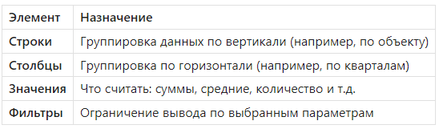
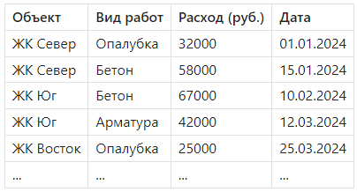

Создание сводной таблицы

Андрей, привет! Сегодня мы разберем один из самых мощных инструментов Excel — сводные таблицы. Они позволяют автоматически группировать, суммировать и анализировать большие объемы данных — всего в несколько кликов. Например, ты сможешь быстро узнать, сколько потратили на материалы по каждому объекту за квартал, или сравнить объемы по подрядчикам. После этого урока научишься создавать сводные таблицы с нуля, настраивать поля, группировки и даже сортировать по кварталам или месяцам. Поехали!
Что такое сводная таблица
Сводная таблица — это мощный инструмент Excel, позволяющий быстро агрегировать, группировать и анализировать большие объемы данных без написания формул.
Она как универсальный отчет — ты сам задаешь структуру: что сгруппировать, по каким критериям посчитать и что отобразить.
Пример
Есть таблица на 5000 строк по закупкам стройматериалов — сводная таблица может за 5 секунд показать, сколько потратили по каждому объекту, по каждому подрядчику или по каждому месяцу.
Основные компоненты сводной таблицы:

Принцип работы
- Excel анализирует все уникальные значения в выбранных полях.
- Затем группирует и агрегирует данные в соответствии с вашей настройкой.
- Все это — без изменения исходной таблицы.
⚠️ Советы и нюансы
Совет 1. Сначала подготовь данные:
- Убедись, что все данные находятся в табличной форме (одна строка — один элемент).
- Не должно быть пустых строк или столбцов внутри диапазона.
- Лучше всего превратить диапазон в умную таблицу (Ctrl + T) — сводная будет автоматически обновляться.
Совет 2. Названия столбцов
- Заголовки должны быть однозначными и понятными: «Объект», «Дата», «Расход», а не «Колонка 1».
- Иначе Excel будет путаться при построении структуры сводной.
Совет 3. Правильные поля
- Строки — что мы хотим группировать (Объекты, Подрядчики, Материалы).
- Значения — что мы хотим считать (Сумма расходов, Кол-во закупок).
- Столбцы — обычно используются для временных срезов (Кварталы, Месяцы), статусов или категорий.
Совет 4. Группировка по датам
Excel умеет автоматически группировать даты по месяцам, кварталам, годам:
ПКМ на любую дату → Группировать → Выбери нужные единицы. Это очень удобно для анализа затрат во времени.
Совет 5. Форматирование чисел
- Суммы отображаются в простом виде, например: 195823.
- Лучше применить числовой формат с разделителем разрядов и без лишних знаков после запятой: ПКМ по значению → Формат ячеек → Числовой.
Совет 6. Обновление данных
Если ты добавил новые строки в исходную таблицу, сводная их не увидит автоматически, пока ты не нажмешь Обновить (ПКМ по сводной → Обновить). Или используй умную таблицу (Ctrl + T) — она обновляется сама.
Совет 7. Названия полей в сводной
Excel по умолчанию называет поля как «Сумма по Расход», «Количество по Работы».
Ты можешь переименовывать эти заголовки вручную — это не влияет на формулы, но делает отчет понятнее.
🚫 Частые ошибки
Практическая часть
1. Исходная таблица (на листе «Данные»):

2. Создай сводную таблицу:
- Выдели всю таблицу.
- Вкладка «Вставка» → «Сводная таблица».
- Новый лист.
3. Настрой поля:
- Строки: Объект
- Столбцы: Квартал (настроим группировку по дате)
- Значения: Сумма по полю «Расход (руб.)»
4. Группируй по кварталам:
- ПКМ по любой дате → Группировать → выбрать «Кварталы».
5. Дополнительные опции:
- Фильтр по виду работ
- Сортировка по убыванию